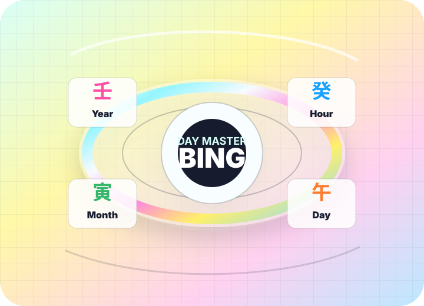

NEW
$0.99 Birth Chart
Your personality, money, work, love, family, location, and lucky actions.
1 Star CreditSajuPop turns your birth date, time, and place into a corrected Four Pillars chart, then translates stems, branches, Ten Gods, symbolic stars, and timing cycles into warm English.
Pick a reading
Your personality, money, work, love, family, location, and lucky actions.
1 Star CreditFor partners, friends, founders, roommates, and situationships.
1 Star CreditDecade-scale timing: when to push, pause, move, build, or reset.
Partly FreeChoose dates for launches, moves, weddings, contracts, and openings.
Partly FreeAnnual theme, monthly rhythm, pressure points, and lucky windows.
Partly FreeAsk follow-up questions in plain English after your report.
1 Moon CreditManse calendar view

Visual explanation layer
Each pillar has a sky sign and a ground sign. The reading starts from the Day Master, then checks how every other marker relates to it.
Elements are not just objects. They become moods, habits, career styles, relationship needs, and timing patterns.
These small tags explain why a chart feels smooth, conflicted, restless, magnetic, or emotionally complicated.
Sample reading style
Built-in education
The perpetual calendar used to convert birth data into year, month, day, and hour pillars.
The heavenly stem of the day pillar; the reference point for identity and Ten Gods.
Budgeting, tangible assets, salary, reliability, and practical resource management.
Intuition, unusual learning, deep analysis, private imagination, and overthinking risk.
Precise observation and sharp language; useful for design, medicine, research, and critique.
Mentors, rescue energy, timely help, and the feeling that a door opens at the right moment.
Two signs cooperate and may transform into another element under the right conditions.
Opposition that can create conflict, movement, distance, relocation, or necessary change.
Trust layer
Saju is presented as a Korean interpretive tradition for reflection and entertainment. The product should clearly explain time correction, protect birth data, and avoid medical, legal, psychological, or financial certainty.